20-Slide Visual Executive Presentation Deck
The $2.14 Trillion Saudi Projects Universe: Key Programs, Awards & 2027 Strategic Delivery Outlook
Corporate Briefing Asset: High-resolution presentation generated matching AZ Consultants deep-emerald standards.
Direct PDF Download: AZ_Saudi_2.14tn_Projects_Intelligence_A4.pdf (Print-ready A4 Landscape, 200 DPI).
Interactive Web Deck: Launch HTML Presentation
Slide 1: Executive Cover Slide
- Kick Header: STRATEGIC INTELLIGENCE & CAPITAL ALLOCATION BRIEFING
- Title: The $2.14 Trillion Saudi Projects Universe
- Subtitle: Key Programs, Contract Awards, Sectoral Rebalancing & 2027 Delivery Outlook: An institutional commercial guide to capital deployment and execution discipline.
- Credentials: Engineered by AZ Consultants (Senior Forward Deployed Engineering & Capital Project Advisory). Built for CEOs, Asset Owners, and Tier-1 EPC Leaders.
- Key Benchmarks:
- $2.14 Trillion: Total Pipeline Volume
- $1.72 Trillion: Planned & Unawarded Work (80.4%)
- ~$100B / Year: Sustained Contract Awards Run-Rate
- 2027 Horizon: Shift from Procurement to Physical Asset Delivery
- Delivery Value Chain: Concept Design → Master Planning → EPC Procurement → Physical Delivery → Testing & Commissioning → Long-Term IFM
Slide 2: Under the Hood of the $2.14 Trillion Pipeline
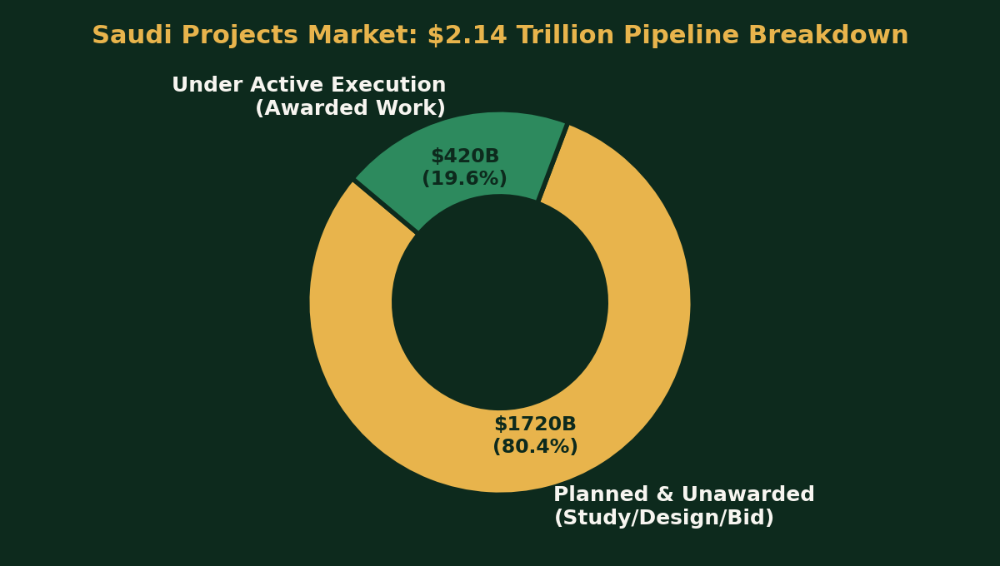
- Planned & Unawarded ($1.72tn): Over 80% sits in study, design, and tendering phases, offering a 10-year commercial horizon.
- Active Execution ($420B): Over $400B in civil works, piling, foundations, and early packages actively on the ground.
- Delivery Capacity Pressure: The bottleneck has shifted from project financing to physical contractor capacity.
- Beginner Lens: Saudi Arabia is not a single market—it is an unprecedented concurrent infrastructure build.
- Strategic Commercial Tip: Focus tendering resources where capital allocators have locked in budget appropriations.
- Executive Takeaway: Visibility is high; the game is won on execution capacity, not market discovery.
Slide 3: Contract Awards Trajectory (2020–2027 Outlook)
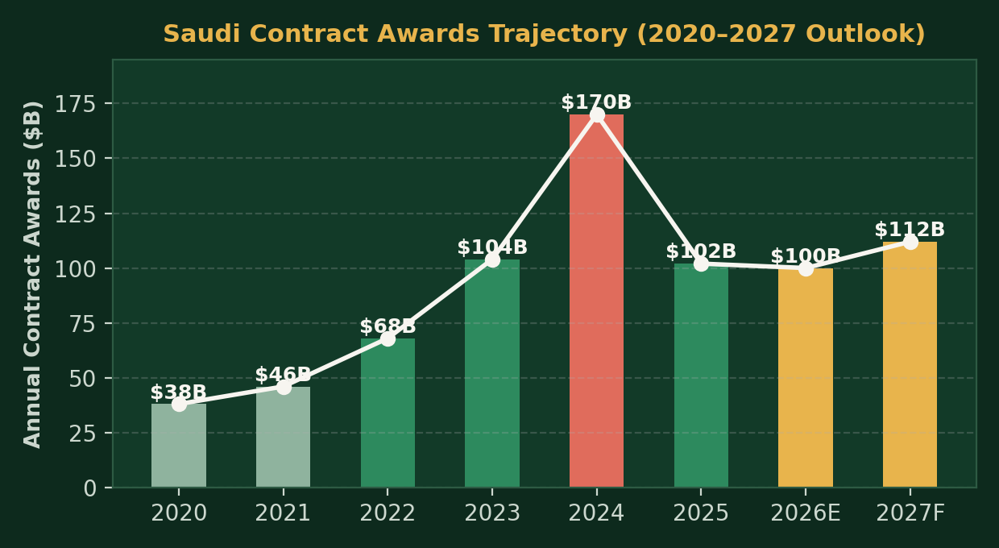
- 2024 High-Water Mark: Initial giga-project mobilization drove historic award spikes across civil and infrastructure (~$170B).
- 2025–2026 Normalization: A steady run-rate of ~$100B/year provides sustained, predictable pipeline velocity.
- 2027 Strategic Upside: Awards forecast to expand toward $112B+ as secondary building packages are tendered.
- Beginner Lens: Markets do not grow in a straight line; normalization prevents systemic contractor defaults.
- Strategic Commercial Tip: Structure bids for long-term multi-year execution rather than short-term price gouging.
- Executive Takeaway: A $100B annual run-rate represents the world's most lucrative active construction theater.
Slide 4: Sectoral Allocation of the $2.14 Trillion Pipeline
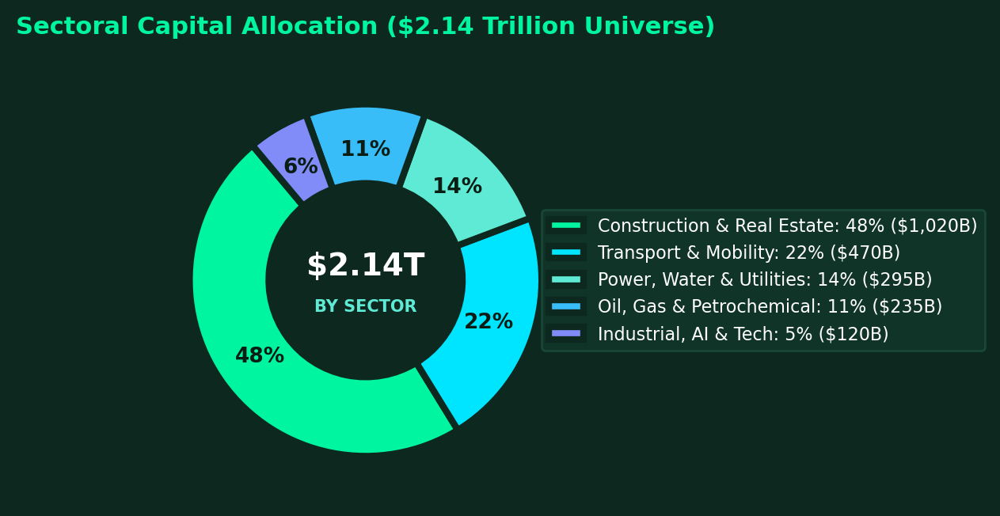
- Construction ($1.02tn / 48%): Mass housing, commercial mixed-use, hospitality, and civic institutional mega-developments.
- Transport & Rail ($470B / 22%): Express rail networks, international airport hubs, expressways, and maritime logistics.
- Utilities & Process ($650B / 30%): Power grid interconnections, water networks, gas processing, and industrial facilities.
- Beginner Lens: Real estate creates the living spaces; transport and utilities make them viable.
- Strategic Commercial Tip: Diversify capabilities across construction and infrastructure to ride shifting sector waves.
- Executive Takeaway: Value concentrates where physical connectivity unlocks land valuation.
Slide 5: The Utilities Anomaly: Overbuilding Pause vs Grid Surge

- Preemptive Overbuilding: Massive solar IPPs and independent water plants (IWPs) met near-term demand buffers.
- Grid Transmission (+28%): Focus shifted decisively toward 380kV substations, HVDC links, and grid stability.
- Water Transmission (+18%): Strategic pipelines moving desalinated water from coastal plants to inland cities.
- Beginner Lens: A drop in generation awards is not a retreat—it is a planned pause to build the grid wires.
- Strategic Commercial Tip: Pivot engineering teams from power generation to transmission substations and grid interconnects.
- Executive Takeaway: Generation is useless without transmission and distribution infrastructure.
Slide 6: Non-Utilities Surge: AI Data Centers & Gas Infrastructure
 Industrial Site Evidence: Liquid-cooled hyperscale AI compute facility hosting sovereign national models.
Industrial Site Evidence: Liquid-cooled hyperscale AI compute facility hosting sovereign national models.
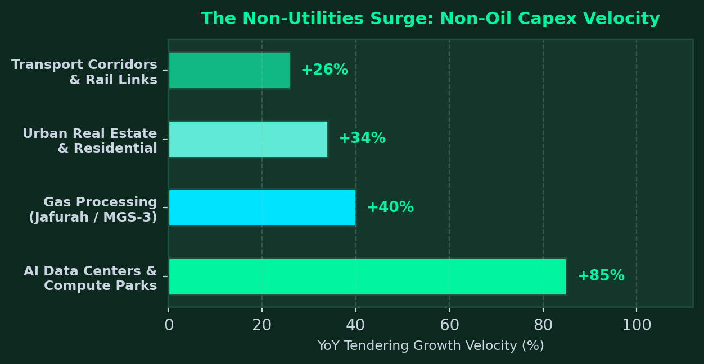
- AI Data Center Boom (+85%): Over $25B committed to sovereign compute hubs, hyperscale parks, and AI infrastructure.
- Gas Processing Spine (+40%): Aramco's Jafurah Basin and Master Gas System Phase 3 accelerating industrial feedstocks.
- Urban Real Estate (+34%): Commercial office towers and residential communities expanding in Riyadh and Jeddah.
- Beginner Lens: The Kingdom is building the digital and energy foundations for post-oil industrial sovereignty.
- Strategic Commercial Tip: Pre-qualify specialized teams for high-density data centers and mission-critical MEP.
- Executive Takeaway: Data centers and unconventional gas represent the highest-margin engineering frontiers.
Slide 7: Riyadh's Gravitational Pull: Expo 2030 & 2034 World Cup
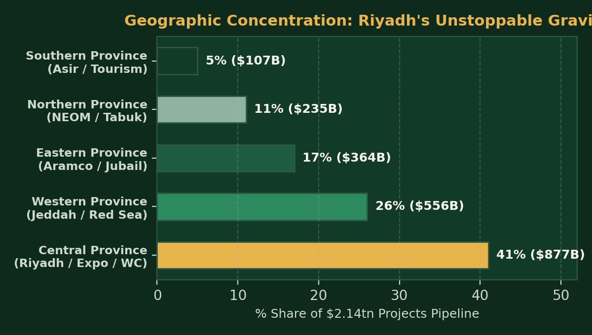
- Non-Negotiable Deadlines: Expo 2030 and 2034 FIFA World Cup create immovable completion milestones for Riyadh.
- Riyadh Metamorphosis: New Murabba, Diriyah, King Salman International Airport, and Metro line extensions.
- Western & Eastern Balance: Red Sea coastal tourism and Eastern Province industrial hydrocarbons maintain strong momentum.
- Beginner Lens: Riyadh is transforming from an administrative capital into a 15-million-citizen global metropolis.
- Strategic Commercial Tip: Establish permanent Riyadh engineering and operational hubs to capture municipal and PIF awards.
- Executive Takeaway: Deadlines tied to global sovereign events guarantee funding ring-fencing.
Slide 8: Giga-Project Re-basing: Phased Modules vs All-at-Once
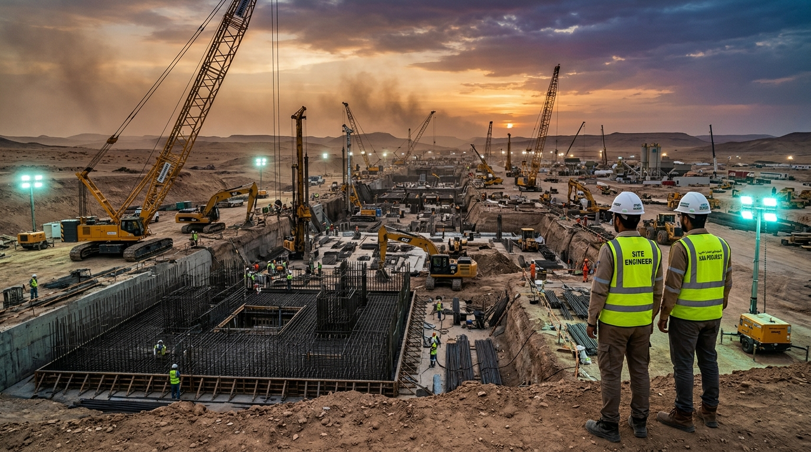
Industrial Site Evidence: Heavy civil earthworks, piling, and crawler crane mobilization across Vision 2030 megaproject zones.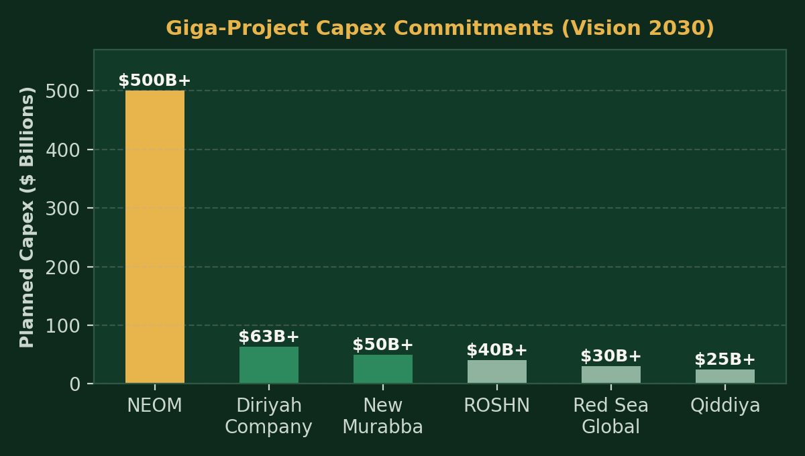
- NEOM Modular Delivery: Sindalah luxury island delivered; early modules of The Line, Trojena, and Oxagon prioritized.
- Diriyah & New Murabba: Heritage-anchored urban development and landmark commercial cores progressing in phases.
- ROSHN & Red Sea Global: Community residential handovers and high-end eco-tourism resorts achieving operational status.
- Beginner Lens: Phased delivery is not scaling down—it is the engineering hallmark of capital maturity.
- Strategic Commercial Tip: Package bids into modular, independent delivery phases that protect contractor cash flow.
- Executive Takeaway: Phased execution ensures early revenue generation and operational stability.
Slide 9: Capital Allocators: Sovereign PIF vs Saudi Aramco

- PIF Portfolio Companies (55%): Giga-projects, ROSHN, Diriyah Company, New Murabba, and infrastructure development arms.
- Saudi Aramco (22%): World-class procurement standards anchoring upstream, downstream gas, and industrial cities.
- Ministries & Statutory Bodies (23%): Ministry of Transport, National Housing Company, and Royal Commission for Riyadh City.
- Beginner Lens: Understanding your client's governance structure determines contract success and payment timeliness.
- Strategic Commercial Tip: Align compliance, reporting, and safety protocols with PIF and Aramco tier-1 standards.
- Executive Takeaway: PIF and Aramco represent the twin sovereign engines of national transformation.
Slide 10: Tier-1 EPC Backlog Saturation

- Over-Committed Capacities: Top contractors (Nesma, El-Seif, Al-Bawani, Almabani) face acute engineering and site bandwidth caps.
- Specialist Joint Ventures: International EPCs forming JVs with local partners to inject balance sheet and technical muscle.
- Margin Scrutiny: Massive order books leave zero tolerance for execution delay or cost-overrun slippage.
- Beginner Lens: Having too much work is as dangerous for a contractor as having too little.
- Strategic Commercial Tip: Leverage subcontractor partnerships and digital engineering to expand execution bandwidth.
- Executive Takeaway: Prudent risk management means capping order books to maintain delivery margins.
Slide 11: Supply Chain 'Blowback': Material Inflation & Lead Times

- Severe Lead Time Extension: MEP switchgear and chillers stretching past 48 weeks; structural steel lead times exceeding 32 weeks.
- Lump-Sum Margin Erosion: Unhedged fixed-price contracts risk 500–800 basis points of EBITDA degradation.
- Local Sourcing Acceleration: Developers pushing domestic precast and modular assembly to bypass global maritime chokepoints.
- Beginner Lens: Material blowback happens when thousands of projects order the exact same equipment simultaneously.
- Strategic Commercial Tip: Enact early equipment procurement clauses and index commodity price variation into contracts.
- Executive Takeaway: Unhedged supply chain blowback destroys more contractor margins than bad engineering.
Slide 12: Regulatory 'Jail': Local Content, Saudization & Visa Caps

- Iktva 70% Local Content: Sovereign clients mandate domestic value retention, supplier localization, and local assembly.
- Saudization (Nitaqat) Quotas: Strict nationalization requirements for engineering, project management, and HSE leadership.
- Visa Allocation Ceilings: Government policies prevent indiscriminate low-skill labor imports; talent must be upskilled locally.
- Beginner Lens: Compliance is not red tape—it is the statutory price of doing business in Saudi Arabia.
- Strategic Commercial Tip: Invest in domestic engineering academies and build verified Saudi-certified supplier databases.
- Executive Takeaway: Contractors who master local content avoid regulatory jail and win preferred-partner status.
Slide 13: Cash Flow Friction: Compressing the Working Capital Cycle

- Extended Milestone Sign-Offs: Complex consultant approval chains historic drivers of contractor liquidity crunches.
- Digital IPC Certification: Automated quantity takeoff and digital signatures cut interim payment certificate verification by 60%.
- Supply Chain Financing: Sovereign clients providing early contractor involvement (ECI) and milestone mobilization facilities.
- Beginner Lens: Cash is the lifeblood of construction; even profitable contracts fail if cash flow freezes.
- Strategic Commercial Tip: Negotiate collaborative payment terms and integrate automated quantity takeoff into CAFM/BMS.
- Executive Takeaway: Compressing payment cycles by 60 days unlocks millions in working capital.
Slide 14: Transport Spine: Airports, Expressways & Landbridge
 Industrial Site Evidence: Multimodal freight logistics and heavy rail operations along the Saudi Landbridge cross-country corridor.
Industrial Site Evidence: Multimodal freight logistics and heavy rail operations along the Saudi Landbridge cross-country corridor.
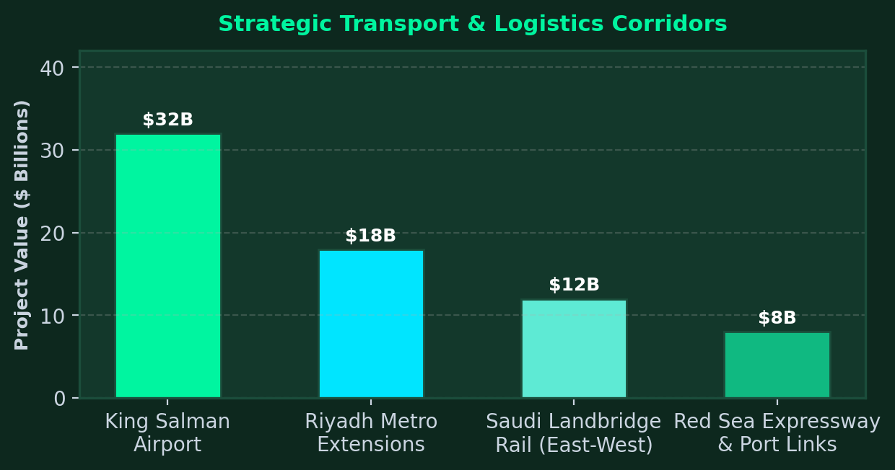
- King Salman Airport ($32B): A 6-runway global aviation megahub targeting 120 million passengers by 2030.
- Saudi Landbridge Rail ($12B): East-west freight and high-speed passenger rail corridor connecting Jeddah to Riyadh and Jubail.
- Riyadh Metro Expansion ($18B): Extending lines to connect new masterplans, airport terminals, and Qiddiya.
- Beginner Lens: Transport infrastructure turns isolated developments into an integrated national economic grid.
- Strategic Commercial Tip: Position capabilities for civil rail, tunneling, signaling, and terminal MEP installations.
- Executive Takeaway: Transport corridors multiply real estate land values by 3x to 5x.
Slide 15: Green Energy Transition: 130 GW Clean Capacity by 2030
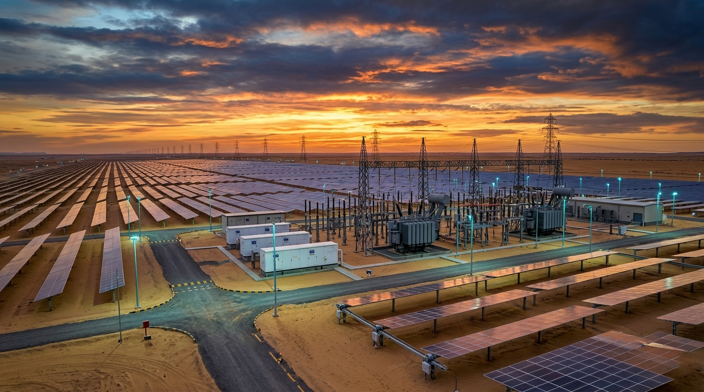
Industrial Site Evidence: Utility-scale solar PV tracking park coupled with 380kV grid interconnection substation.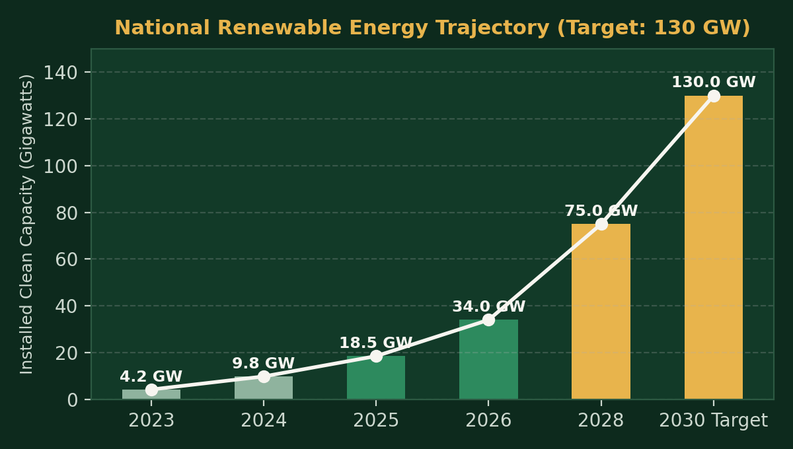
- Utility-Scale Solar (85 GW): Massive solar parks (Sudair, Al-Shuaibah, Saad) delivering sub-2-cent clean electricity.
- Wind & Storage (35 GW): Dumat Al-Jandal and Red Sea coastal wind farms coupled with gigawatt-hour battery storage.
- Green Hydrogen Export (10 GW): NEOM Green Hydrogen Company constructing the world's largest commercial-scale ammonia plant.
- Beginner Lens: Saudi Arabia is leveraging its geographic solar irradiance to become the world's low-cost clean energy exporter.
- Strategic Commercial Tip: Integrate clean power purchase agreements (PPAs) into commercial facilities to achieve ESG targets.
- Executive Takeaway: The energy transition is both an ecological mandate and an industrial superpower strategy.
Slide 16: Hydrocarbon Bedrock: Jafurah Basin & Master Gas System
Industrial Site Evidence: High-pressure gas fractionation towers and pipeline distribution manifolds.

- Jafurah Gas Basin ($110B): Largest unconventional non-associated gas play in North America and MENA combined.
- Master Gas System 3 ($10B): Expanding domestic gas distribution pipelines by 4,000+ km to replace liquid fuel burning.
- Petrochemical Cracker Complexes: Converting crude oil directly into advanced chemicals and industrial feedstocks.
- Beginner Lens: Natural gas replaces crude burning in power plants, freeing up barrels for high-value chemical exports.
- Strategic Commercial Tip: Engage Aramco's Iktva-compliant engineering supply chains for high-specification process packages.
- Executive Takeaway: Natural gas provides the firm baseload power required for industrial transformation.
Slide 17: The Operational 'Dash': AI Telemetry & Real-Time Control
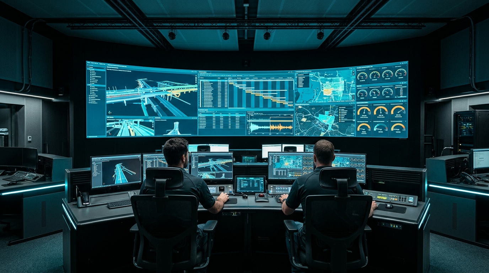
Industrial Site Evidence: Forward deployed digital command tower integrating 3D BIM models and real-time Oracle Primavera P6 logic.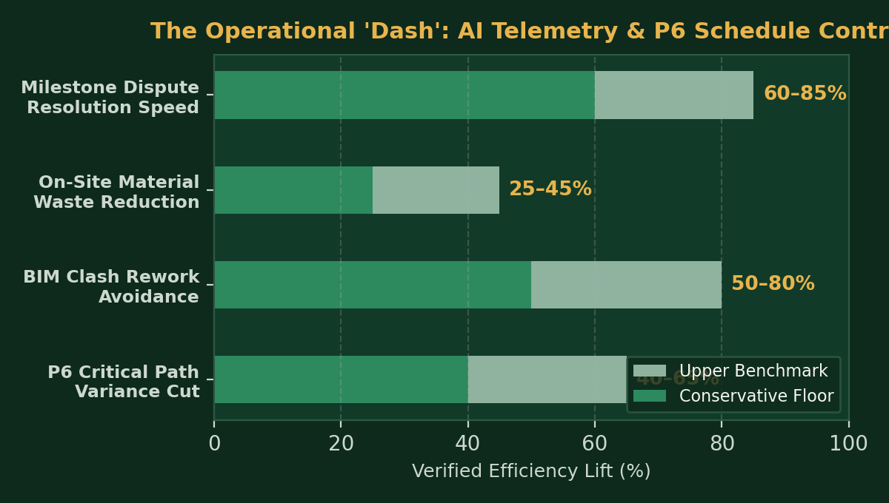
- P6 Schedule Reconciliation: Forward deployed AI compares site progress photos to Oracle Primavera P6 logic in real time.
- BIM Clash Pre-emption: Multimodal computer vision detects MEP routing clashes before concrete pours commence.
- Dispute Resolution Speed: Immutable digital telemetry and drone aerial audits resolve contractor claims 85% faster.
- Beginner Lens: The operational dash replaces delayed monthly PDFs with real-time site engineering truth.
- Strategic Commercial Tip: Deploy forward deployed engineers with tablet telemetry directly onto project sites.
- Executive Takeaway: Real-time operational dashboards convert execution risk into measurable EBITDA protection.
Slide 18: 2027 Strategic Outlook: Delivery Phase & Tri-Scenario Modeling
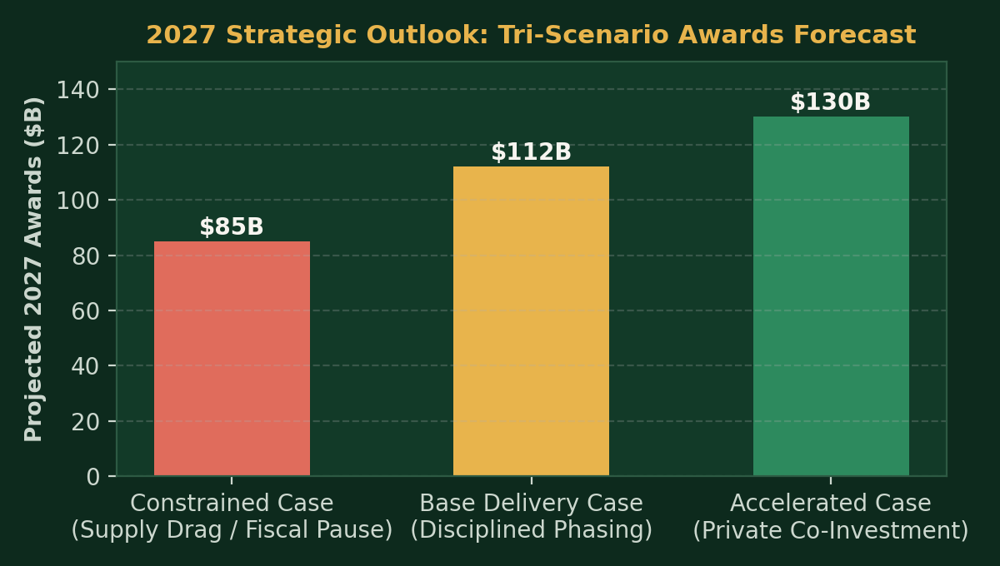
- Base Delivery Case ($112B): Disciplined execution pacing; focus on Expo 2030 and World Cup 2034 milestone handovers.
- Accelerated Case ($130B): Strong private sector co-investment and public-private partnerships (PPPs) injecting capital.
- Constrained Case ($85B): Supply chain bottlenecks and selective re-phasing delaying non-critical secondary packages.
- Beginner Lens: 2027 will separate organizations that manage delivery discipline from those dependent on announcement hype.
- Strategic Commercial Tip: Structure corporate balance sheets and backlog intake around the Base Case $112B delivery curve.
- Executive Takeaway: The future belongs to asset deliverers, smart operators, and lifecycle facilities managers.
Slide 19: The AZ Consultants 5-Stage Capital Delivery Funnel
- Stage 1 (Discover): Macro Pipeline & Risk Scoping: unawarded exposure, supply chains & 3 ranked bottleneck gates.
- Stage 2 (Diagnose): Supply Chain, Blowback & Regulatory Audit: Iktva local content & contractor backlog stress-testing.
- Stage 3 (Design): Forward Deployed AI & Schedule Governance: P6 schedule reconciliation & target-cost risk alignment.
- Stage 4 (Deliver): Site Execution & Cash Flow Compression: automated IPC certification & 68-day cash cycles.
- Stage 5 (Scale): Long-Term Operational IFM & Asset Handover: digital twins, predictive telemetry & asset value preservation.
Slide 20: Boardroom Engagement & Contact

- Executive Office Email: azengineeringapp@gmail.com
- Mobile / WhatsApp: +966 57 426 8856
- LinkedIn Leadership: linkedin.com/in/aamirzameer
- Engineering Hub: github.com/Amz34
- Portal: azconsultants-ksa.pages.dev
- Signoff: Aamir Zameer, Senior Forward Deployed Engineer & Managing Director · AZ Consultants